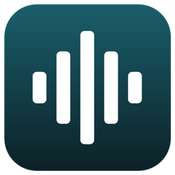

SoapcapBeta
Session notes, drafted on your Mac
Soapcap listens to a telehealth session as it happens, turns it into a transcript with each speaker marked, and drafts a SOAP, DAP or BIRP note from it. Everything runs on your Mac. No audio is recorded, nothing from a session is sent anywhere, and nothing is saved unless you ask.
Download SoapcapThe latest version, signed and notarized by Apple. What's new
What you need
- A Mac with Apple silicon, running macOS 26 or later
- 16 GB of memory is best; the note models take 6.5 to 8.5 GB while they draft
- About 6 GB of disk for a note model, downloaded from within the app
Installing
- Open the downloaded Soapcap.zip to unzip it.
- Drag Soapcap into your Applications folder.
- Open it from Applications. macOS asks once whether to open an app from the internet; choose Open.
- Soapcap walks you through the two permissions it needs, then lets you download a note model in Settings.
Updating
Quit Soapcap with Cmd-Q, then drag the new version into Applications and choose Replace. Your models, settings and permissions are kept.
Not a medical device. Soapcap drafts notes for a clinician to check; it does not diagnose or advise. A language model writes the draft, and it can leave out what was said or add what wasn't. Read every note before it goes in a record. Soapcap is free software provided as is, with no warranty.